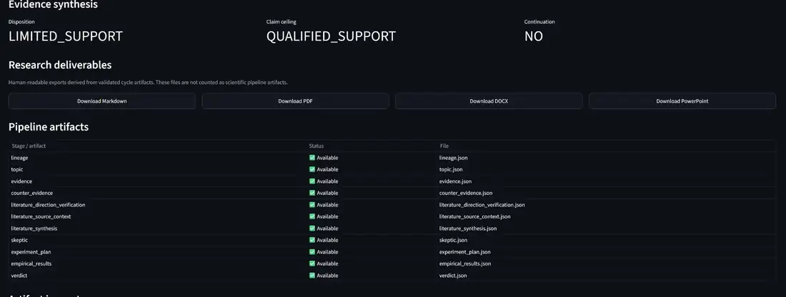
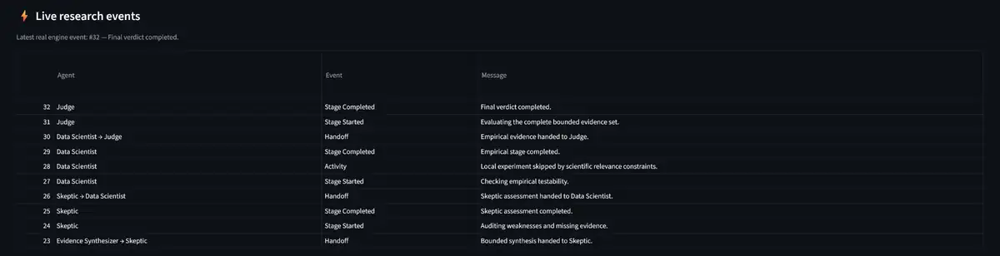

Autonomous Research Lab
A domain-agnostic multi-agent scientific research platform for turning a research question into an observable, evidence-based and auditable workflow.



Research workflow
A question is decomposed into explicit responsibilities. Each stage produces artefacts that can be handed to the next role and inspected later.
What the agents actually do
- Research Director: formalises the question and selects the research direction.
- Researcher: gathers and evaluates supporting evidence.
- Counter-Researcher: actively searches for contradictory evidence and failure cases.
- Evidence Synthesizer: combines bounded evidence into a structured synthesis.
- Skeptic: audits weaknesses, missing evidence and unsupported claims.
- Data Scientist: checks empirical testability and runs local analysis where scientifically relevant.
- Judge: evaluates the complete evidence set and produces the final verdict.
Evidence, provenance and auditability
The lab persists the research trail rather than reducing the process to a final chat answer. Pipeline artefacts include lineage, topic definition, evidence, counter-evidence, literature verification/context, synthesis, skeptic review, experiment planning, empirical results and verdict.
This creates a traceable path from the original question to the final conclusion and makes it possible to inspect where a claim came from, what challenged it and what evidence survived review.
Human-readable research deliverables
Validated cycle artefacts can be turned into human-readable outputs such as Markdown, PDF, DOCX and PowerPoint. The export layer is separate from the scientific pipeline so presentation does not replace provenance.
Domain agnostic by design
The architecture is intentionally not tied to one research field or one API provider. The same workflow can be applied to medicine, economics, agriculture, technology, public policy and other domains when suitable sources and data are available.
Why I built it
I wanted a research system where autonomy does not mean losing visibility. The project explores how specialised agents, falsification, empirical checks, provenance and explicit hand-offs can make automated research more inspectable and disciplined.